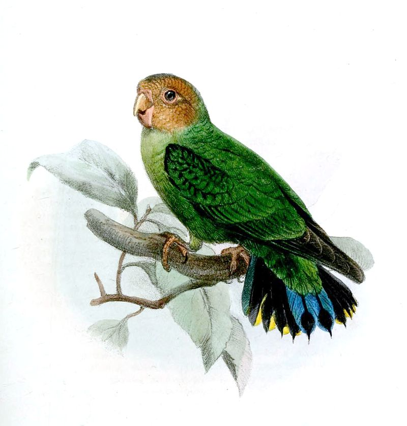

Дятловые попугайчики

Дятловые попугайчики (лат. Micropsitta) — род попугаевых.
Внешний вид
Самые мелкие представители отряда. Длина их тела не превышает 10 см, крыла около 6—7 см. Имеют сильно изогнутый и узкий клюв с рубчиками на конце надклювья, высота которого больше длины. Пальцы у них длинные, когти слабые, чуть изогнутые. Хвост короткий со слегка закруглённым или прямым срезом, подобен хвосту дятлов.
Распространение
Обитают на Новой Гвинее и близлежащих островах.
Образ жизни
Обычно держатся у вершин самых высоких деревьев, чаще фиговых. Птицы лазают по стволам деревьев, в чём им помогает жёсткий хвост. Питаются древесным соком, мягкими плодами кустарников и деревьев. Поедают в большом количестве насекомых.
Классификация
Род включает в себя 6 видов:
- Дятловый попугайчик Бруина (Micropsitta bruijnii)
- Дятловый попугайчик Финша (Micropsitta finschii)
- Дятловый попугайчик Шлегеля (Micropsitta geelvinkiana)
- Дятловый попугайчик Сальвадори (Micropsitta keiensis)
- Дятловый попугайчик Меека (Micropsitta meeki)
- Дятловый попугайчик Склэтера (Micropsitta pusio)